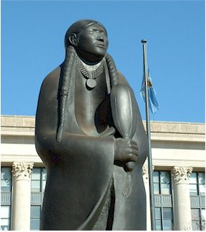
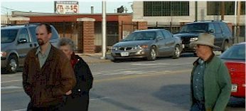
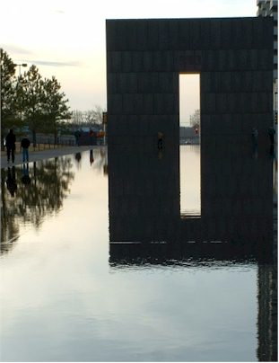

It's hard to tell, but do you think they're related?!!

Taken looking up at the inside of the dome

Here we are heading to the OKC Bombing Memorial

toured the museum and were very impressed with it.
January 9 - 12, 2004
| We were so happy to welcome Dan & Rose as
our first house guests. And what an easy couple they were to
host! We had a great time catching up, touring the town, eating
lots, and getting in some good rest as well. Dan & Rose came up
from their winter hideout in Los Fresnos, TX. They spend a few weeks
down there every year, recharging and preparing for the end of another
Montana winter. |
|
|
It's hard to tell, but do you think they're related?!! |
|
| Here we are touring the capitol building. | |
 |
|
| A nice sculpture outside the capitol building |
Taken looking up at the inside of the dome |
 Here we are heading to the OKC Bombing Memorial |
 |
| We got there just at dusk and it was beautiful. We toured the museum and were very impressed with it. |
|
| It was a great visit!!
|
|